Repository Configuration
Overview
There are a wide variety of Repository options that can be configured. These options can be modified at any time from the Deadline Monitor while in Power User Mode by selecting Tools -> Configure Repository Options. If you want to restore all the Repository Options to their defaults, simply click the Reset Settings button.

Note that long-running applications like the Launcher, Worker, and Pulse only update these settings every 10 minutes, so after making changes, it can take up to 10 minutes for all machines to recognize them.
You can restart these applications to have them recognize the changes immediately.
Client Setup
These settings affect the Deadline Client installed on each machine.
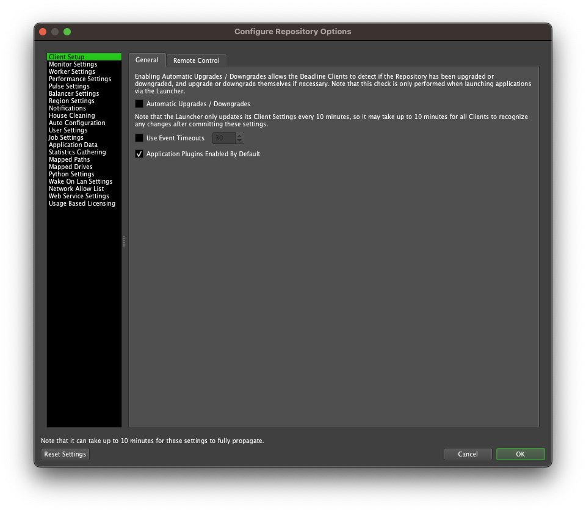
Client Settings
Automatic Upgrades / Downgrades: Enabling Automatic Upgrades / Downgrades allows the Deadline Clients to detect if the Repository has been changed via the running of the Deadline Repository Installer and upgrade/downgrade themselves if necessary. Note that the user performing the upgrade will need write permissions to the Deadline Client install directory. The upgrade check is only performed when launching applications via the Launcher. Finally, this is NOT an “Automatic Update” system and does NOT automatically download and install a new version of Deadline to either your repository or clients. Instead, this system allows all your Deadline clients to automatically upgrade/downgrade themselves, based on the version of Deadline installed to the Deadline Repository via the Repository Installer executable. So, in summary, you run the Deadline repository installer on the repository machine and with this setting enabled, the next time any of the Deadline local applications are started via the ‘launcher’ application, they will be upgraded/downgraded accordingly.
Use Event Timeouts: Enabling Event Timeouts will cause event triggers to time out if all Event Plugins do not finish in the specified amount of time.
Application Plugins Enabled By Default: Enabling this setting will cause new Application Plugins added to the Repository to be enabled. It is recommended that this setting be turned off for security reasons.
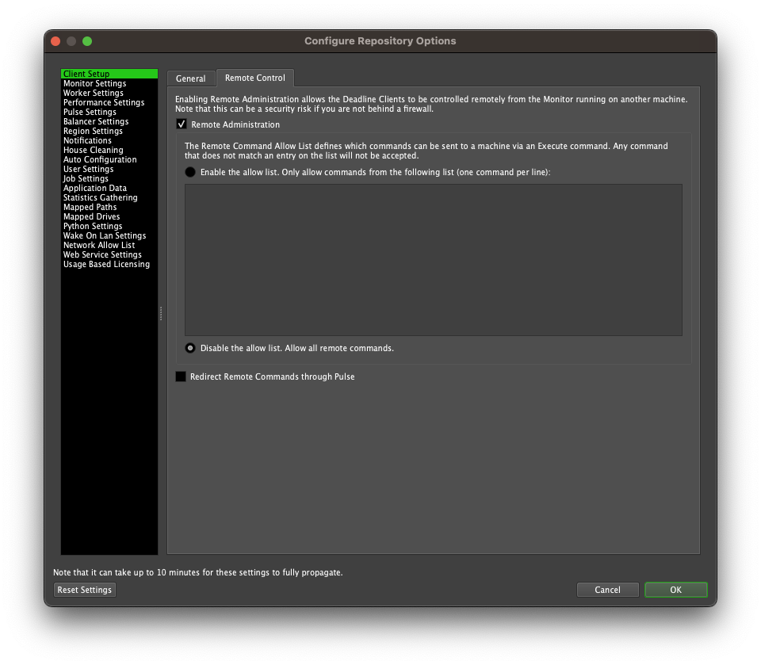
Remote Control Settings
Note
Remote Commands to your local machine only do not require Remote Administration to be enabled (assuming your username has been granted access to the right-click “Remote Control Machine” -> “Execute Command” menu option). Remote Command Allow List is still applied if it is enabled.
Note
The allow list can be enabled or disabled. If disabled, all remote commands are allowed.
Redirect Remote Commands through Pulse: If enabled, remote commands will be redirected first to Pulse then to the target, in the case that the target cannot be accessed directly through the current network. Default is disabled.
Monitor Settings
These settings affect the Deadline Monitor application on each machine.
Monitor Layouts
Note
If you have existing layouts saved from Deadline versions prior to 10.4, you will need to migrate them to the new version before you can use them. See the MigrateMonitorLayouts DeadlineCommand documentation for more information.
Existing Monitor layouts can be added here. These layouts can be assigned to User Groups as a user’s default layout. If the Pinned option is enabled, they can also be chosen from the Pinned Layouts menu in the Monitor.
The order of the layouts here will be the same in the Pinned Layouts menu.
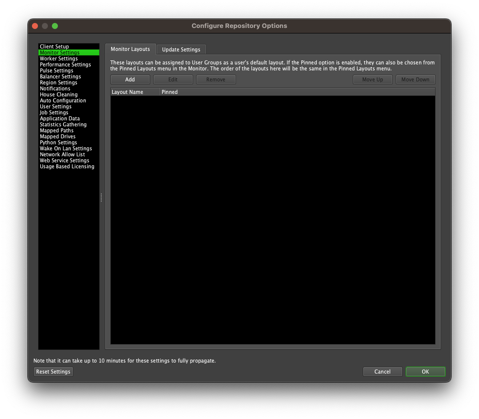
To add a new layout, press the Add button, and then choose an existing Monitor layout file, or use the current Monitor’s layout. Monitor layout files can be saved from the Monitor by selecting View -> Save Layout.
Deadline 10.4 uses a new format for layout files. If you load a layout file that was created by an earlier version, it will be converted into the new format, and it will no longer work with earlier versions of Deadline. A backup of the layout file will be created alongside it with “Legacy Backup” appended to the layout file name, which can be used with prior Deadline versions.
Warning
Only open layout files from trusted sources.
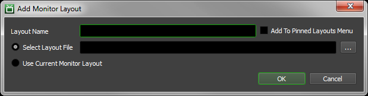
Update Settings
Enable Manual Refreshing
If your Auto Refreshing Intervals are set to longer intervals, manual refreshing in the Monitor can be enabled to allow users to get the most up to date data immediately. To prevent users from abusing manual refreshing,
a minimum interval between manual refreshes can be configured.
Sorting and Filtering
For farms that have a large number of Jobs (10,000+) or Workers (1000+), disabling Automatic Sorting and Filtering in the lists in the Monitor can improve the Monitor’s overall performance.
This option in the Repository Options can be used to disable Automatic Sorting and Filtering by default, and users can enable it later in their Monitors if desired.
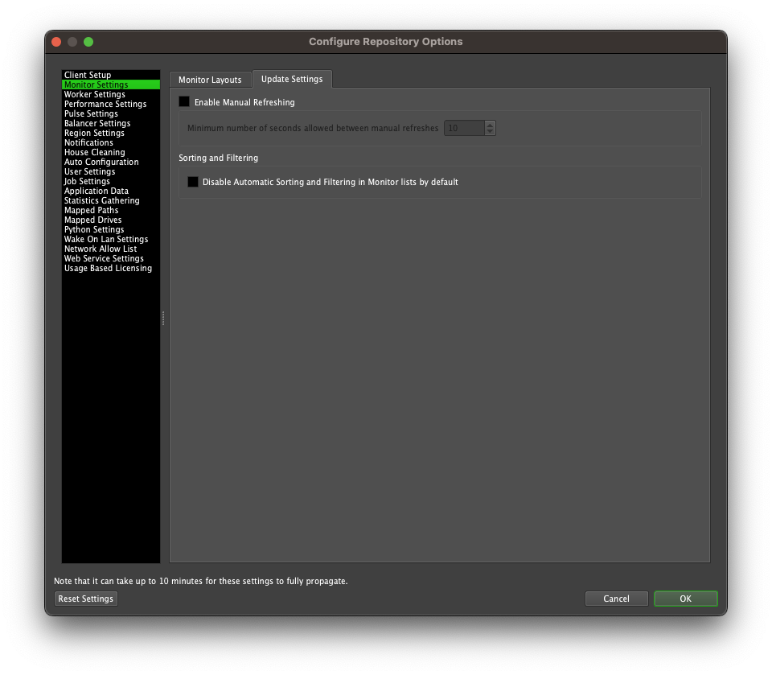
Worker Settings
These settings affect the Deadline Worker application on each machine.
Worker Settings
General
Limit the number of characters per line for standard output handling: Lines of standard output that are longer than the specified limit will be ignored by the Worker’s stdout handling.
Delete Offline/Stalled Workers from the Repository after this many days: Workers that are Offline or Stalled will be removed from the Repository after this many days.
Global Remote Command Port Override: If enabled, this port will be used by all Workers for remote commands instead of a random port. Note that this global override can be overridden on a per-Worker basis.
Gather System Resources (CPU and RAM) When Rendering Tasks On Linux/Mac: If enabled, the Worker will collect CPU and RAM usage for a task while it is rendering. We have seen cases where this can cause the Worker to crash on Linux or Mac, so you should only disable this feature if you run into this problem.
Use fully qualified domain name (FQDN) for Machine Name instead of host name: If enabled, the Worker will try to use the machine’s fully qualified domain name (FQDN) when setting its Machine Name instead of using the machine’s host name. The FQDN will then be used for Remote Control, which can be useful if the remote machine name isn’t recognized in the local network. If the Worker can’t resolve the FQDN, it will just use the host name instead.
Use Worker’s IP Address for Remote Control: If enabled, the Worker’s IP address will be used for remote control instead of trying to resolve the Worker’s host name.
Exclude Jobs in the ‘none’ Pool: Prevents the Workers from picking up Jobs that have been submitted to the ‘none’ pool.
Exclude Jobs in the ‘none’ Group: Prevents the Workers from picking up Jobs that have been submitted to the ‘none’ group.
Run Plugin Sandbox in Job’s Environment: If enabled, the Plugin Sandbox will run in the same environment as the rendering Job. The Job’s environment variables will be available to Plugin scripts which some studio pipelines might rely on (instead of a clean Job environment). Default is disabled.
Wait Times
Number of minutes before an unresponsive Worker is marked as Stalled: If a Worker has not provided a status update in this amount of time, it will be marked as stalled. If the Resource Tracker is tracking this Worker, the Worker will be terminated after this stall time.
Number of seconds between Thermal Shutdown checks if Pulse is offline: The number of seconds between thermal shutdown checks. The Worker only does this check if Pulse is not running.
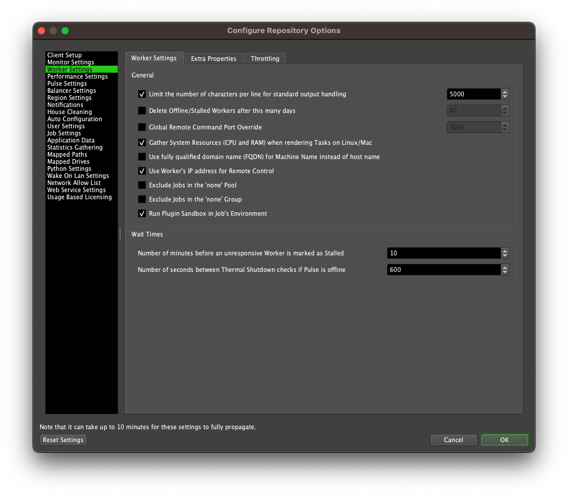
Throttling
Throttling can be used to limit the number of Worker applications that are copying over the Job files at the same time. This can help network performance if large scene files are being submitted with the Jobs.
Note that a Worker only copies over the Job files when it starts up a new Job. When it goes to render subsequent tasks for the same Job, it will not be affected by the throttling feature.
Enable Throttling: Allow throttling to occur.
Maximum Number of Workers That Can Copy Job Files at The Same Time: The maximum number of Workers that can copy a scene file at the same time.
The Interval a Worker Waits Between Updates To See If It Can Start Copying Job Files: The amount of time (in seconds) a Worker will wait to perform throttle checks and updates.
Throttle Update Timeout Multiplier (based on the Worker Interval): The interval a Worker waits between updates is multiplied by this value to determine the timeout value.
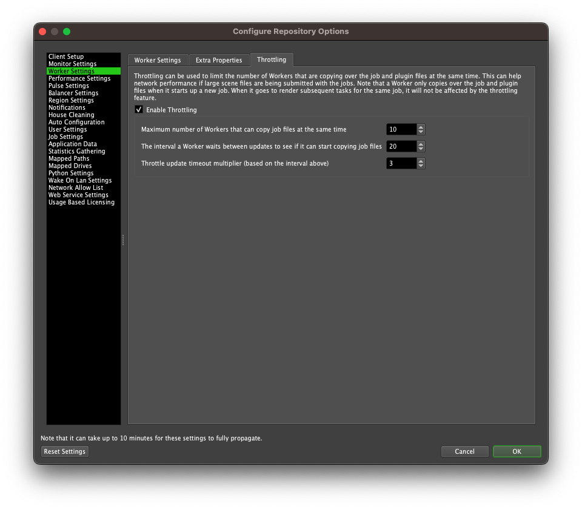
Pulse Settings
These settings control how the Workers connect to Pulse, and are also used by the Worker to determine if Pulse is running.
General
Maximum Incoming Connections: The maximum number of Workers that can connect to Pulse at any given time.
Connection Timeout (in milliseconds): The amount of time (in milliseconds) that messages to and from Pulse have to complete before they timeout.
Maximum Connection Attempts: The maximum number of times a Worker will attempt to connect to Pulse before giving up.
Stalled Pulse Threshold (in minutes): Deadline determines if a Pulse has stalled by checking the last time that the Pulse has provided a status update. If a Pulse has not updated its state in the specified amount of time, it will be marked as Stalled.
Global Remote Command Port Override: If enabled, this port will be used by all Pulses for remote commands instead of a random port. Note that this global override can be overridden on a per-Pulse basis.
Use Pulse’s IP Address When Workers Connect To Pulse and For Remote Control: If enabled, the Pulse’s IP address will be used when the Workers connect to Pulse, and for remote control, instead of trying to resolve the Pulse’s hostname.
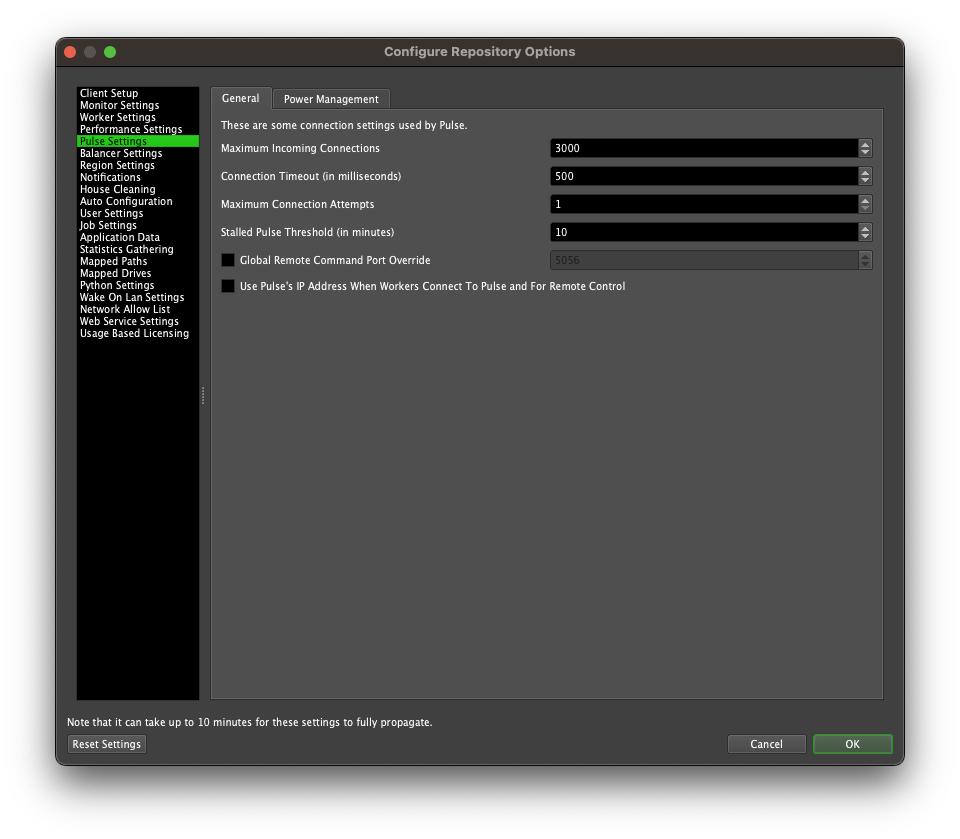
Balancer Settings (deprecated)
These settings control general settings for the Balancer. Note that the Balancer is no longer a supported application.
Balancer Update Interval: How often the Balancer performs a balancing cycle.
Stalled Balancer Threshold (in minutes): Deadline determines if a Balancer has stalled by checking the last time that the Balancer has provided a status update. If a Balancer has not updated its state in the specified amount of time, it will be marked as Stalled.
Current Algorithm Logic: The Balancer Plugin to use for determining balancing targets.
Error Limit: How many cycles the Balancer is allowed to error for before it restarts.
Global Remote Command Port Override: If enabled, this port will be used by all Balancers for remote commands. Otherwise, the port used will be randomly assigned on each Balancers’ startup.
Use Balancer’s IP Address for Remote Control: If enabled, the Balancer’s IP address will be used for remote control instead of trying to resolve the Balancer’s host name.
Enable Group Switching: If there are group mappings that have the same image and hardware types instances will move between groups as needed. If it’s not enabled instances will shutdown and startup like normal.
The settings for the currently selected Algorithm Logic will be shown here as well.
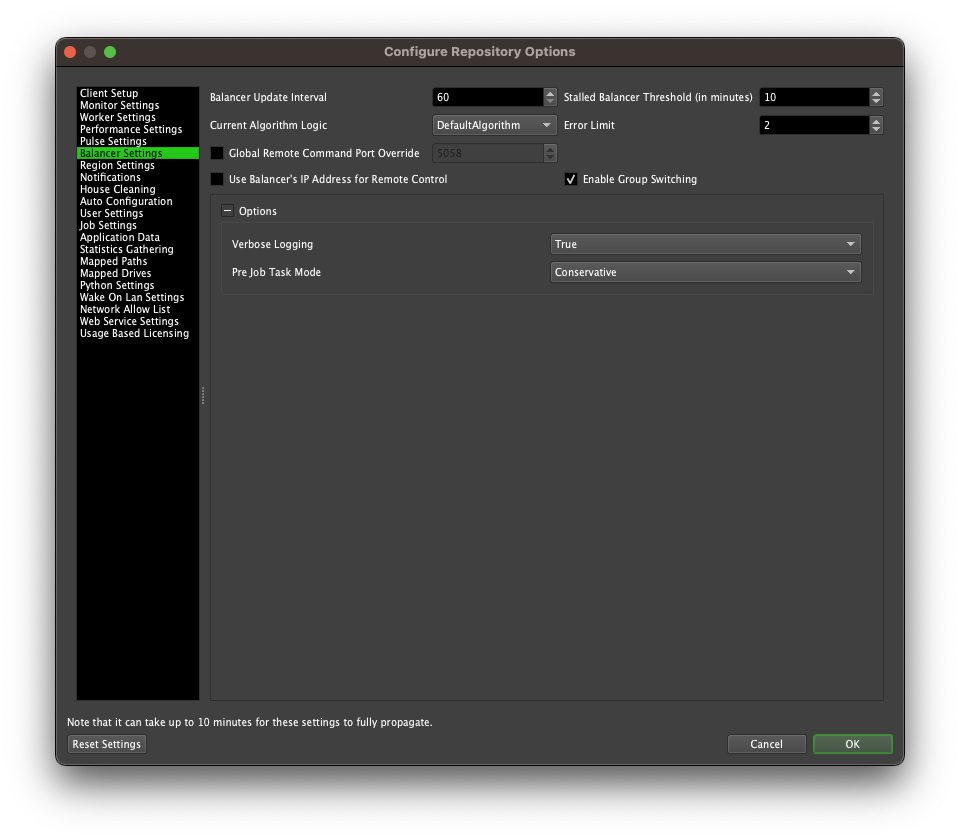
Region Settings
This is where you can set up Regions in Deadline. Regions are logical groupings for Workers. Cross Platform Rendering and Balancer Settings can be unique to each Region. For example a Worker that’s in the ‘thinkbox_west’ Region will use the path mapping settings for that Region. The list on the right shows the Cloud Regions and the list on the left shows the general Regions. See Cross Platform Rendering for more information.
Note
Regions must have a unique name. ‘All’, ‘none’ and ‘unrecognized’ are reserved names that cannot be used.
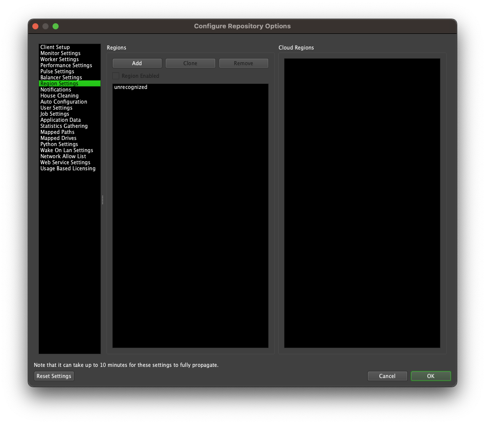
Email Notification
This section handles all email related settings within the repository.
Primary and Secondary Server
Set up a primary SMTP server to send email notifications. You can set up an optional secondary SMTP server for Deadline to use if the primary server is unavailable.
SMTP Server: The SMTP server used by Deadline to send emails.
Sender Account: The email account that Deadline will use to send emails from.
Port: The SMTP port to use.
Use SSL: The email account from which the notifications will be sent.
SMTP Server Requires Authentication: Enable if the SMTP server requires a user name and password to authenticate.
Testing: Send a test email to the specified email address.
Automatically Generate Email Addresses for New Users: Generates new email address for new users in the form username@postfix, where ‘postfix’ is the value entered in the Email Address Postfix field.
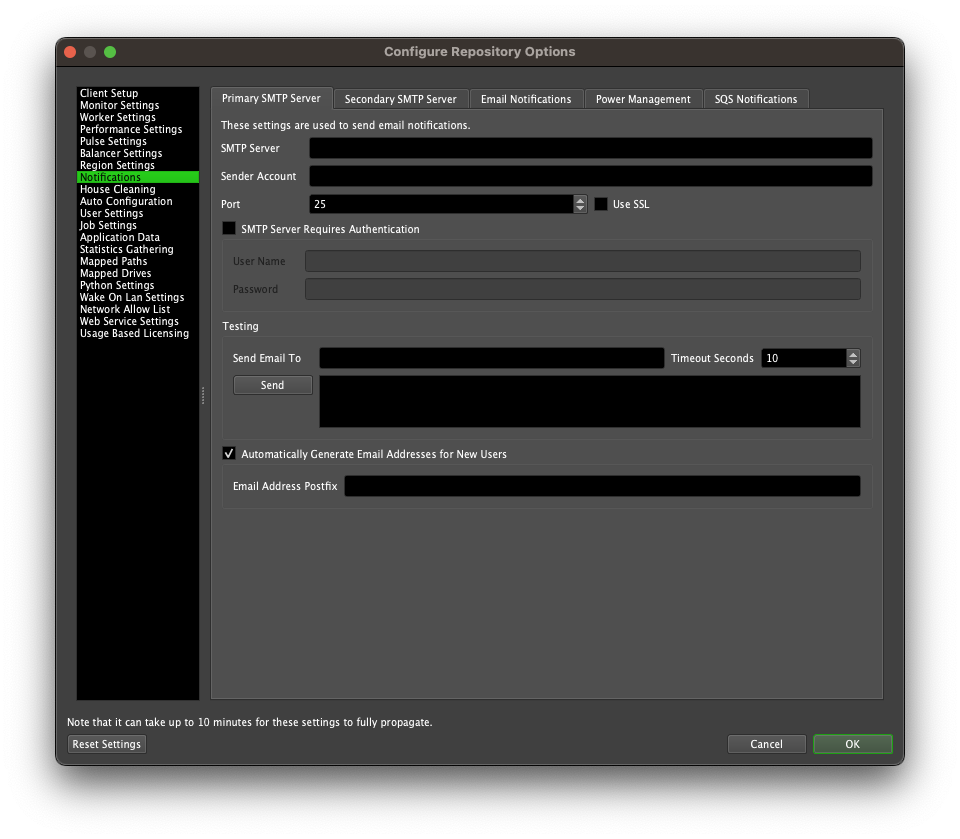
If you are using Google Mail to send emails (smtp.gmail.com), you will typically use port 25 if SSL is disabled, and port 465 if SSL is enabled. See Google’s documentation on Sending Emails for more information.
Notifications
Job Completed: When a Job completes, an email will be sent to these email addresses.
Job Timed Out: When a Job times out, an email will be sent to these email addresses.
Job Error Warning: When a Job accumulates a certain number of errors, a warning email will be sent to these email addresses. You can configure the warning limit in the Failure Detection settings.
Job Failed: When a Job fails, an email will be sent to these email addresses.
Worker Error Warning: When a Worker accumulates a certain number of errors in one session, a warning email will be sent to these email addresses. You can configure the warning limit in the Failure Detection settings.
Stalled Applications: When a stalled Worker, Pulse or Connection Server is detected, an email will be sent to these email addresses.
System Administrator: When users use the option in the Error Report Viewer to report error messages to their system administrator, those emails will be sent to these email addresses.
Low Database Connections: Low Database connection notification emails will be sent to these email addresses. See Database Resource Limits for more information on this issue.
Database Connection Thresholds: When the number of available database connections is below the set threshold a warning email will be sent.
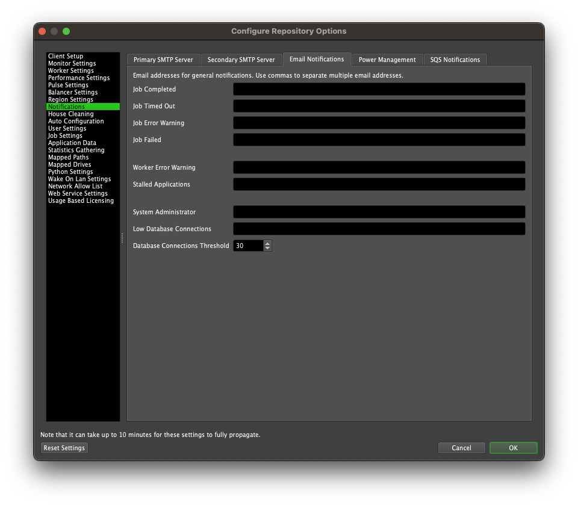
Power Management Notifications
Idle Shutdown: Notifications for Idle Shutdown operations will be sent to these email addresses.
Machine Startup: Notifications for Machine Startup operations will be sent to these email addresses.
Thermal Shutdown: Notifications for Thermal Shutdown operations will be sent to these email addresses.
Machine Restart: Notifications for Machine Restart operations will be sent to these email addresses.
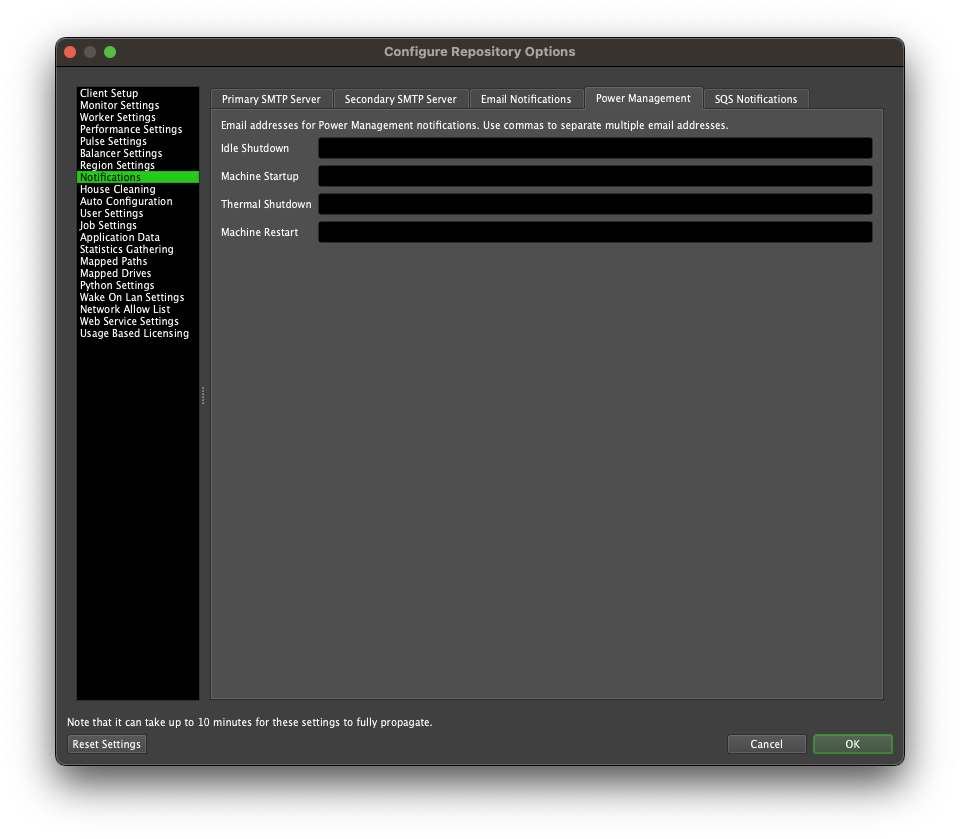
House Cleaning
Note
In Deadline 10.0.21 and later, client applications (Pulse, Worker, etc.) that are connected to the Remote Connection Server will not be able to perform house cleaning operations. Instead, the Remote Connection Server has adopted this responsibility and will perform House Cleaning, Repository Repair, and Pending Job Scan periodically.
Client applications that use a direct Repository connection can still perform house cleaning operations as normal.
When running several applications in Direct connection mode it might be necessary to prevent some of them from running house cleaning tasks. This could be done by setting the following environment variables to true:
DCONFIG_DISABLEHOUSECLEANING
DCONFIG_DISABLEREPOSITORYJOBSSCAN
DCONFIG_DISABLEREPOSITORYREPAIR
The same effect could be achieved with configuration file settings: House Cleaning Override Settings.
Pending Job Scan
The Pending Job Scan determines if any pending Jobs should be released, or if any pending Job events should be processed. If Pulse is running, it will perform the Pending Job Scan every interval. If Pulse is not running, the Workers will perform the Pending Job Scan between tasks if the interval has passed.
Pending Job Scan Interval: The maximum amount of time between Pending Job Scans in seconds.
Allow Workers to Perform the Pending Job Scan If Pulse is not Running: If enabled, the Workers will perform the pending Job scan if Pulse is not running. If disabled, only Pulse can perform the pending Job scan.
Run Pending Job Scan in a Separate Process: If enabled, the pending Job scan will be run in a separate process. This can be useful when using dependency scripts to ensure that a crash caused by the
script doesn’t cause the main application (Pulse, Worker, or Monitor) to crash.
Write Pending Job Scan Output to Separate Log File: If enabled, all output from the pending Job scan will be placed into a separate log file.
Pending Job Scan Process Timeout: If running the pending Job scan in a separate process, this is the maximum amount of time the process can take before it is aborted.
Asynchronous Job Events: If enabled, many Job events will be processed asynchronously by the Pending Job Scan operation, which can help improve the performance of the Monitor when performing operations on
batches of Jobs. If this is enabled, the OnJobSubmitted event will still be processed synchronously to ensure that any updates to the Job are committed before the Job can be picked up by Workers.
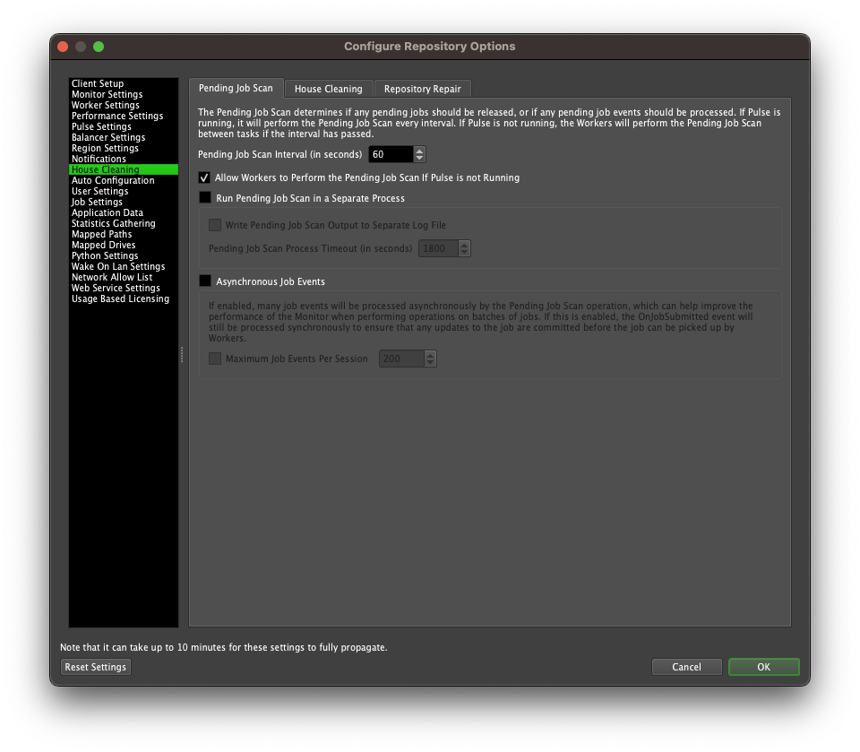
House Cleaning
House Cleaning is responsible for purging old Jobs, Workers, and reports, and for regular maintenance of the repository and database. If Pulse is running, it will perform House Cleaning every interval. If Pulse is not running, the Workers will perform House Cleaning between tasks if the interval has passed.
House Cleaning Interval: The maximum amount of time between House Cleaning operations in seconds.
Allow Workers to Perform House Cleaning If Pulse is not Running: If enabled, the Workers will perform house cleaning if Pulse is not running. If disabled, only Pulse can perform house cleaning.
Run House Cleaning in a Separate Process: If enabled, the house cleaning operation will be run in a separate process.
Write House Cleaning Output to Separate Log File: If enabled, all output from the house cleaning will be placed into a separate log file.
House Cleaning Process Timeout: If running the house cleaning in a separate process, this is the maximum amount of time the process can take before it is aborted.
House Cleaning Maximum Per Session
Maximum Deleted Jobs: The maximum number of deleted Jobs that can be purged per session.
Maximum Archived Jobs: The maximum number of Jobs that can be archived per session.
Maximum Auxiliary Folders: The maximum number of Job auxiliary folders that can be deleted per session.
Maximum Job Reports: The maximum number of Jobs report files that can be deleted per session.
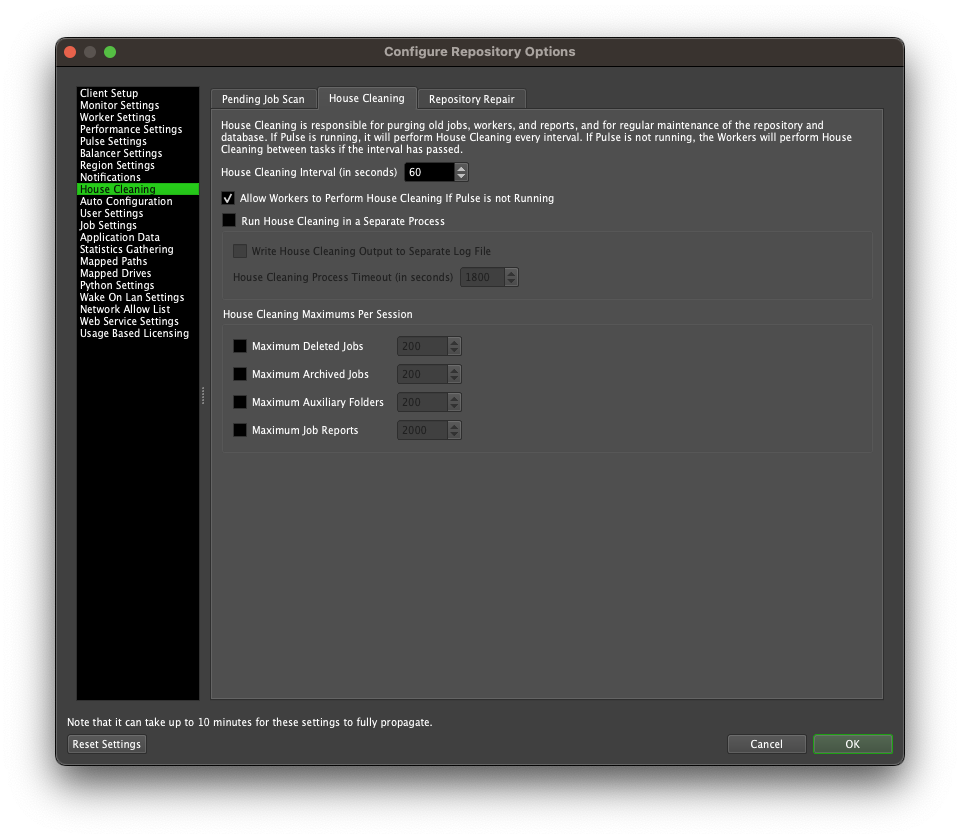
Repository Repair
Repository Repair is responsible for finding orphaned tasks and limit stubs, and checking for stalled Workers. If Pulse is running, it will perform a Repository Repair every interval. If Pulse is not running, the Workers will perform the Repository Repair between tasks if the interval has passed.
Repository Repair Interval: The maximum amount of time between Repository Repair operations in seconds.
Allow Workers to Perform the Repository Repair If Pulse is not Running: If enabled, the Workers will perform the repository repair if Pulse is not running. If disabled, only Pulse can perform the repository repair.
Run Repository Repair in a Separate Process: If enabled, the repository repair operation will be run in a separate process.
Write Repository Repair Output to Separate Log File: If enabled, all output from the repository repair will be placed into a separate log file.
Repository Repair Process Timeout: If running the repository repair in a separate process, this is the maximum amount of time the process can take before it is aborted.
Enable Automatic Primary Pulse Election: If enabled, the Repository Repair operation will elect another running Pulse instance as the Primary if the current Primary Pulse instance is no longer running.
Enable Automatic Primary Balancer Election: If enabled, the Repository Repair operation will elect another running Balancer instance as the Primary if the current Primary Balancer instance is no longer running.
Enable Automatic Primary License Forwarder Election: If enabled, the Repository Repair operation will elect another running License Forwarder instance as the Primary if the current Primary License Forwarder instance is no longer running.
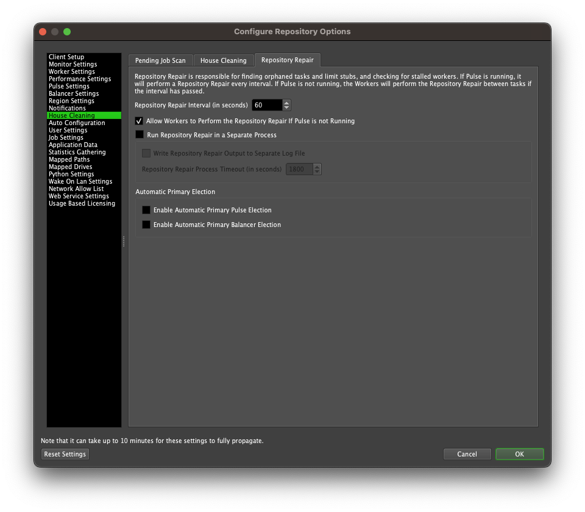
Auto Configuration
This allows you to configure your Workers from a single location. When a Worker starts up, it will automatically pull this configuration from Pulse and apply it before fully initializing.
See the Auto Configuration documentation for more information.
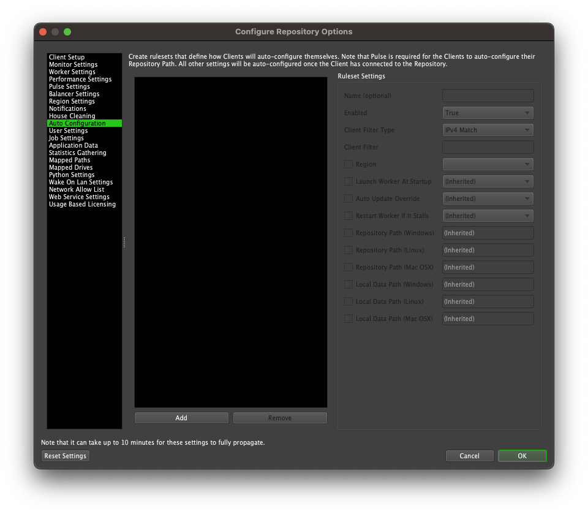
User Settings
Power User Password: The password needed to access Power User Mode in the Monitor. Leave blank for no password.
Deadline User Switching: When using the System User as the Deadline User, the Monitor will use the Deadline User with the same name as the currently logged in operating system user.
Rendering Jobs As User: By default, the rendering process will run under the same user account that the Worker is running as. If Render Jobs As User is enabled, the rendering process will run under the user account associated with the Deadline User that submitted the job. Each Deadline User must have their Render Jobs As User settings configured properly for this to work. On Windows, the user’s Run As Name, Domain, and Password settings will be used to start the rendering process as that operating system user. On Linux and MacOS, only the User Run As Name setting will be used with ‘su’ or ‘sudo’ to start the rendering process as that user. Note that on Linux and MacOS, the Worker must have sudo privileges for this mode to work.
Render Jobs As User: Enable to have Jobs render as the user that submitted them.
Use ‘su’ Instead Of ‘sudo’ On Linux and macOS: If enabled, ‘su’ will be used to run the process as another user instead of ‘sudo’. ‘su’ will be invoked as su username -c "executable" while ‘sudo’ will be invoked as sudo -u username -e "executable". This setting is ignored on Windows.
Preserve Environment On Linux and macOS: If enabled, the user environment will be preserved when running the process as another user using ‘su’ (by passing the ‘-m’ option) or ‘sudo’ (by passing the ‘-E’ option). This setting is ignored on Windows. Note that when this option is disabled, any environment variables that are set for the process by the render plugin are ignored because su or sudo will reset the environment.
Simulate Login (‘su’ only): If enabled, the ‘-l’ option will be passed to ‘su’ in order to simulate a user login. This has no effect when running ‘sudo’.
Note
The behaviour of this ‘-l’ option can vary based on the OS, and the target user’s default SHELL. For bash based shell environments, this setting should be enabled if you are relying on ~/.bashrc to be sourced in the target user’s SHELL. This ‘-l’ option is not required for tcsh shell environments which source ~/.tcshrc regardless.
Set HOME variable to user’s home directory (‘sudo’ only): If enabled, the ‘-H’ option will be passed to ‘sudo’ causing the HOME environment variable will be set to the user’s home directory. This has no effect when running ‘su’.
Execute Remote Commands As User (Only On Linux and macOS): By default, remote commands will be executed under the same user account that the Launcher is running as on the machine receiving the command. If Execute Remote Commands As User is enabled, the command will run using ‘su’ to change the user to the Deadline user that submitted the command. Note that the Launcher must be running as root for this to work properly.
Execute Remote Commands As User (‘su’ only): Enable to have remote commands execute as the user that submitted them.
Preserve Environment (Linux only): If enabled, the user environment will be preserved when running the process as another user using ‘su’. This option is only available on Linux.

Job Settings
Job Scheduling
Scheduling Order
Job Scheduling Order: The order of priority that Deadline uses to schedule Jobs. See the Job Scheduling documentation for more details.
Priority Weight: Weight given to Job priority when using a Weighted scheduling order.
Submission Time Weight: Weight given to Job submission time when using a Weighted scheduling order.
Error Weight: Weight given to the number of errors a Job has when using a Weighted scheduling order.
Rendering Task Weight: Weight given to the number of rendering tasks a Job has when using a Weighted scheduling order.
Rendering Task Buffer: A buffer that is used by Workers to give their Job extra priority on the farm.
Submission Limitations
Task Limit For Jobs: The maximum number of tasks a Job can have. Note that this does not impose a frame limit so you you can always increase the number of frames per task to stay below this limit.
Maximum Job Priority: The maximum priority value a Job can have.
Automatic Job Timeout
Configure Deadline to automatically determine a timeout for a Job based on the render times of tasks that have already completed. If a task goes longer than that timeout, a timeout error will occur and the task will be requeued.
Minimum number of completed tasks required before calculating a timeout: The minimum number of tasks that must be completed before Auto Job Timeout Checking occurs.
Minimum percent of completed tasks required before calculating a timeout: The minimum percent of tasks that must be completed before Auto Job Timeout Checking occurs.
Enforce an automatic Job timeout for all Jobs: If enabled, the Auto Job Timeout will be enabled for all Jobs overriding the per Job specification of the value.
Timeout Multiplier: To calculate the Auto Job Timeout, the longest render time of the completed tasks is multiplied by this value to determine the timeout time.

Failure Detection
Job Failure Detection
Sends warnings and fail Jobs or tasks if they generate too many errors.
Send a warning to the Job’s user after it has generated this many errors: A warning will be sent to the Job’s notification list once its error count has reach. By default, the submitting user is automatically added to this list.
Mark a Job as failed after it has generated this many errors: The number of errors a Job must throw before it is marked as failed.
Mark a task as failed after it has generated this many errors: The number of errors a task must throw before it is marked as failed.
Maximum Number of Job Error Reports Allowed: This is the maximum number of error reports each Job can generate. Once a Job generate this many errors it will fail and can not be resumed until some of it’s error reports are
deleted or this value is increased.
Worker Failure Detection
Sends warnings and prevent Workers from reattempting Jobs that keep generating errors.
Pick next available task for a Job if the Job’s previous task generated an error: If the Worker reports an error for a task, and this option is enabled, it will try to pick up the next available task for the Job instead of the one it just reported an error for. This prevents the Worker from failing to render the same task repeatedly. Note that this setting is ignored by Sequential Jobs.
Send a warning after a Worker has generated this many errors for a Job in a row: The maximum number of errors that can occur before email warnings are sent to the users specified in the Email Notification section.
Mark a Worker as bad after it has generated this many errors for a Job in a row: If a Worker hits this many errors, it will be marked as bad for its current Job.
Frequency at which a Worker will attempt a Job that it has been marked bad for: The percentage of time a Worker will attempt a task it has been marked bad for if no good Jobs are available.

Cleanup
Automatic Job Cleanup
Cleanup Jobs After This Many Days: If enabled, this is the number of days to wait before cleaning up completed Jobs.
Cleanup Mode: Whether the cleanup should archive the Jobs found or delete them.
Only cleanup completed jobs that have not been modified for this many hours: You can also set the number of hours since the Job was last modified before cleaning it up.
Suppress the Archive/Delete On Job Completion if there are Error reports: If enabled error messages don’t get lost to auto complete.
Deleted Job Purging
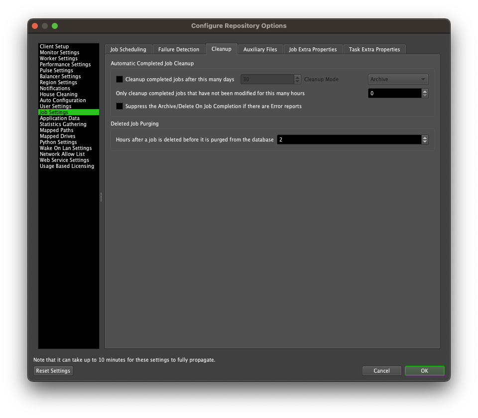
Auxiliary Files
Many Jobs have an option to submit the scene file and other auxiliary files with the Job. This can be useful because it stores a copy of the scene file with the Job that can be referred to later.
However, if the size of these files are large and the Repository server isn’t designed to handle this load, it can seriously impact the Repository machine’s performance. This problem can be avoided by
storing these files in a location on a different server that is designed to handle the load.
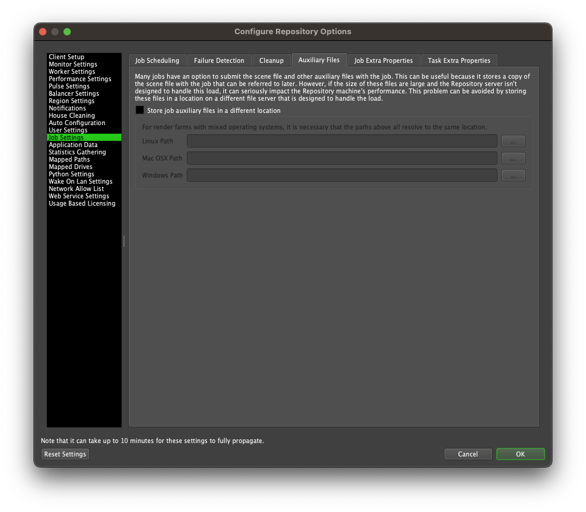
Note
If you are hosting more than one Repository, you should not point them to use the same auxiliary file location. As part of housecleaning, auxiliary files belonging to deleted, archived, or otherwise missing Jobs are routinely deleted from this location. Since housecleaning cannot determine if an auxiliary folder belongs to a Job from a different Repository, each Repository should have its own separate auxiliary file location to avoid deleting another Repository’s auxiliary files.
Application Data
Application Cleanup
The following settings allow you to specify when applications cleanup extraneous files. This includes log files and temporary files that are created by Deadline applications during normal operation. Each Deadline application is responsible for cleaning up its own log files, and must be running in order to do so. Temporary files created by various Deadline applications may be cleaned up by the Balancer, Pulse, Launcher, or Worker applications.
Delete Monitor logs after this many days
Delete Worker logs after this many days
Delete Pulse logs after this many days
Delete Balancer logs after this many days
Delete Launcher logs after this many days
Delete RCS logs after this many days
Delete Web Service logs after this many days
Delete License Forwarder logs after this many days
Delete Temporary files after this many days
Logging Verbosity
These settings control the verbosity of output from the corresponding Deadline application. Disable these if you want to save disk space, as non-verbose logs should take up less disk space than verbose logs. Enabling verbose output will increase the size of your log files, but allow more detailed output to be captured (for troubleshooting).
Worker Verbose Logging: If enabled, more information will be written to the Worker log while it is running.
Pulse Verbose Logging: If enabled, more information will be written to the Pulse log while it is running.
Balancer Verbose Logging: If enabled, more information will be written to the Balancer log while it is running.
Web Service Verbose Logging: If enabled, more information will be written to the Web Service log while it is running.
RCS Verbose Logging: If enabled, more information will be written to the RCS log while it is running.
License Forwarder Verbose Logging: If enabled, more information will be written to the License Forwarder log while it is running.
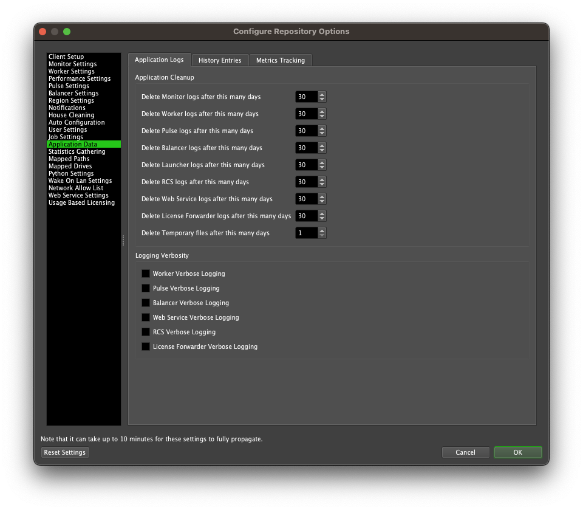
History Entries
Maximum Number of Repository History Entries: The maximum number of repository history entries that are stored before old entries are overwritten.
Maximum Number of Job History Entries: The maximum number of Job history entries that are stored before old entries are overwritten.
Maximum Number of Worker History Entries: The maximum number of Worker history entries that are stored before old entries are overwritten.
Maximum Number of Pulse History Entries: The maximum number of Pulse history entries that are stored before old entries are overwritten.
Maximum Number of Balancer History Entries: The maximum number of Balancer history entries that are stored before old entries are overwritten.
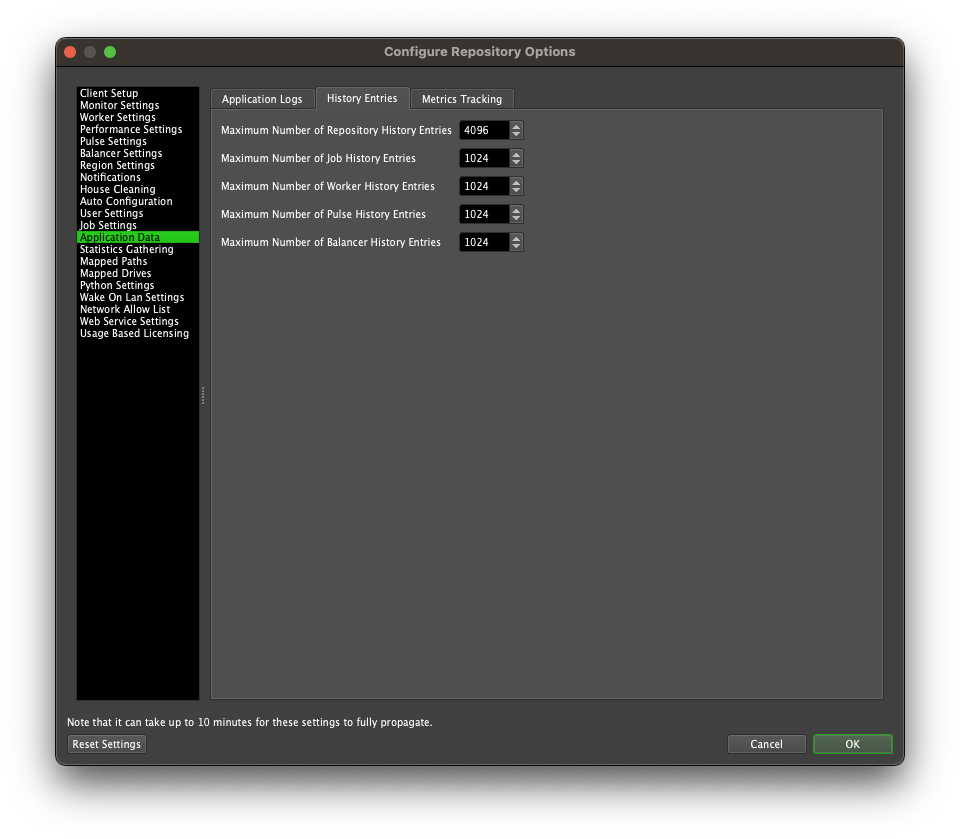
Metrics Tracking
Statistics Gathering
Configure Deadline to keep track of Job and farm statistics. Note that Pulse must be running to gather Worker and Repository statistics. Job statistics will be gathered regardless if Pulse is running or not.
Enable Statistics Gathering: If enabled, Deadline will gather statistical information.
Worker Statistics Gathering Interval(in minutes): The amount of time between polling Workers for statistical information.
Repository Statistics Gathering Interval(in minutes): The amount of time between polling the Repository for statistical information.
Delete Job Statistics After This Many Days: The number of days from generation that Job statistics will be kept before they are deleted.
Delete Worker Statistics After This Many Days: The number of days from generation that Worker statistics will be kept before they are deleted.
Delete Repository Statistics After This Many Days: The number of days from generation that Repository statistics will be kept before they are deleted.
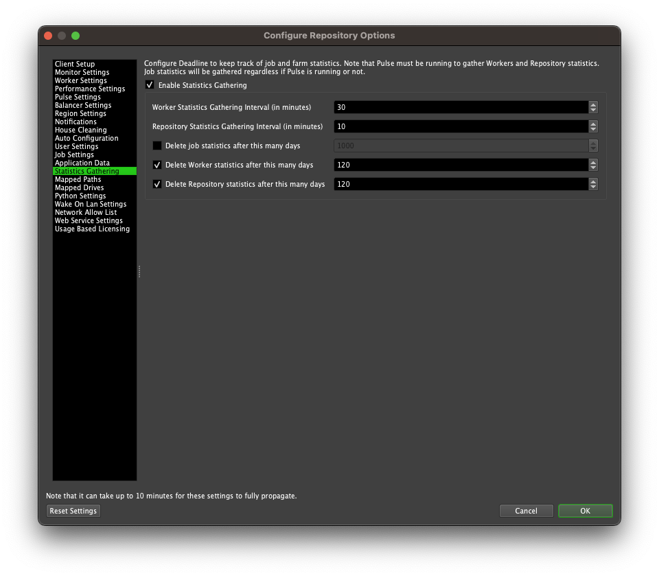
Mapped Paths
Paths to be mapped before rendering (based on Operating System).
You may add, remove, or edit paths as well as modify the order in which they will be mapped.
Mapped paths can be configured by setting up rules in one of two ways. Either globally which will attempt to map your paths before render time in all situations, or at Submission-Time which will create a rule specific to all your submitted jobs based on the environment they were submitted from. The Submission-Time rules are not applied retroactively, so any existing jobs will not have new Path Mapping rules created for them upon creation of a new Submission-Time rule. See the Path Mapping Rule Types section for more details on the differences between the types of Path Mapping rules.
Mapped paths also support Token Substitution, which allows for the use of defined tokens in your paths which can be substituted for values from your environment either at Submission or Render time. See the Token Substitution section for more details on using tokens in your mapped paths.
See the Path Mapping (Cross-Platform Rendering) section for more details on setting up Mapped Paths in general.
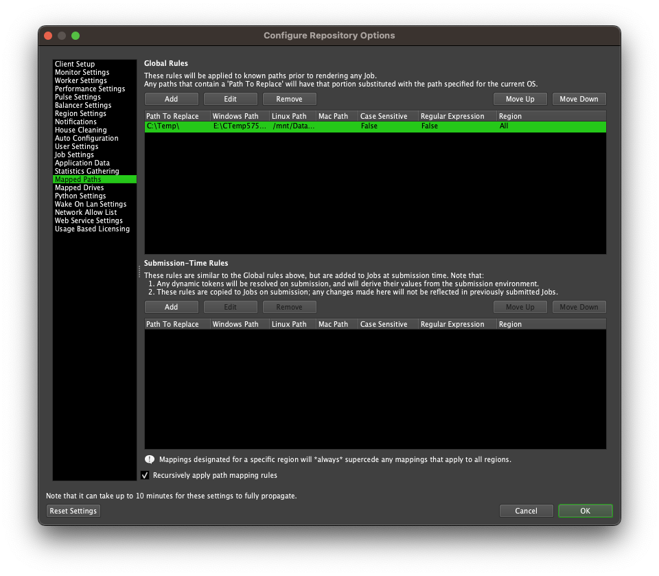
Mapped Drives
It is recommended to always configure any Windows mapped drives you may have globally available in your pipeline to provide another level of resilence in case your login scripts / AD domain based GPO fails on occasion to apply any mapped drive letters typically as a user logs on. Deadline Worker attempts to map any drive letters at the beginning of each Job it renders, but can be configured to skip if the drive letter is already in place via the Only Map If Unmapped setting. For more complicated configurations, our Script API provides functions such as PathUtils.MapNetworkPath() so you can adhoc map drive letters to network paths.
Drives to be mapped before rendering (Windows Only).
Drive: The drive to be mapped.
Remote Path: The remote path for the drive.
Only Map If Unmapped: Enable to only map the drive if it is unmapped. Disabled by default.
Requires Authentication: (Optional) Enable if the drive requires authentication. If unchecked, the existing logged in user account credentials will be used.
Username: Username. Must not be blank.
Password: Password. Must not be blank.
Region: The region that the drive mapping should be applied in.
Note, drives can be mapped when running as a service. Beware that if a user is logged in and has mapped drives set up for them, the Deadline Worker service won’t see them because they run in a different environment. However, if the drives are mapped in the service’s environment (which is what the Worker is doing), then they will work fine. Using the following setting can help remove this potential situation.
Only map drives when the Worker is running as a service: If checked, the Worker will only map the drives if it’s running as a service. If unchecked, it will also do it when the Worker is running as a normal application.
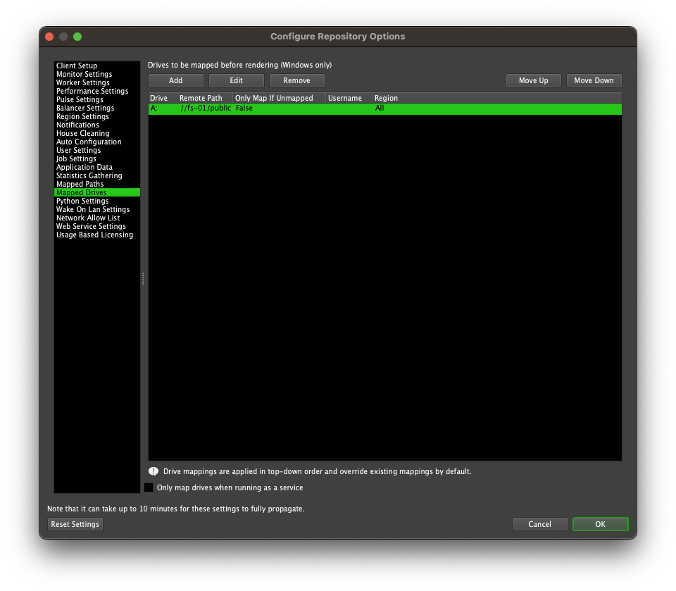
Regions
Regions can be used to setup different mappings for the same drive across your farm. For example, let’s say we have a local farm and a remote farm, and we want to map the drive Z:\ to \\sharedmachine\assets\ in our remote farm but not in our local farm. All we have to do is set the region of our mapping to the same region our remote Workers are in. Workers in the region will replace Z:\ with \\sharedmachine\assets\ but all the other Workers will use Z:\ normally. We could also setup an alternate drive mapping for the Workers in our local farm.
A mapping in the ‘All’ region will apply to every region, even unrecognized ones. If you are configured to the region ‘none’, then the path mapping with the regions configured to ‘All’ will apply. A mapping in the ‘unrecognized’ region will only apply to the regions that are unrecognized.
It should be noted that the drive mappings are applied in top down order so if you wanted a mapping for a specific region to apply instead of an ALL region mapping, then you would have to reorder the drive mappings so that the All region mapping was above the specific region mapping.
Python Settings
A list of additional paths to be added to the Python search paths. Specify one path per line, and use the Add Path button to browse for paths. Because these Python modules will be imported by all Deadline applications, it is best to keep scripts close to where they will be needed. For deployments with multiple offices or operating systems, these paths will be path mapped and so can be modified based on operating system or region.
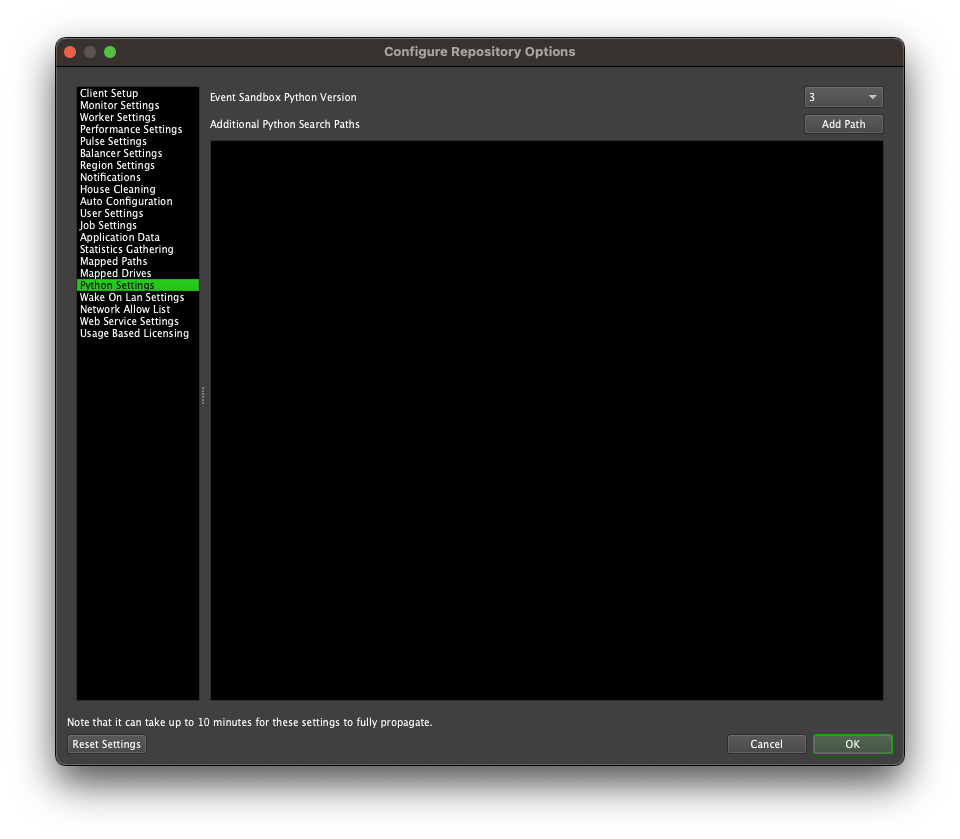
Wake On Lan Settings
Deadline’s Power Management uses Wake On Lan to wake up machines, and you can configure which port(s) the WOL packet is sent over. If no ports are listed here, Deadline will use port 7 and 9 by default. Please see our WOL documentation for setup and configuration and also our WOL Troubleshooting section for further help if required.
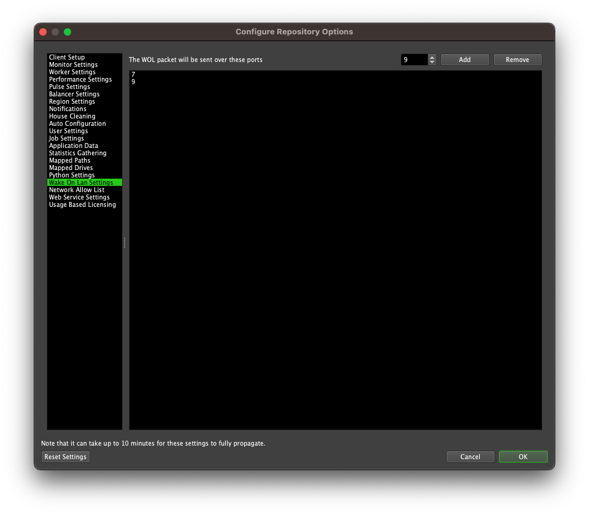
Network Allow List
The Network Allow List is a security feature that applies to both the Web Service and the Connection Servers. If the Network Allow List is enabled, these applications will only accept communications from IP addresses that are specified in this list. Both individual IP addresses and ranges of IP addresses (in CIDR notation) are allowed.
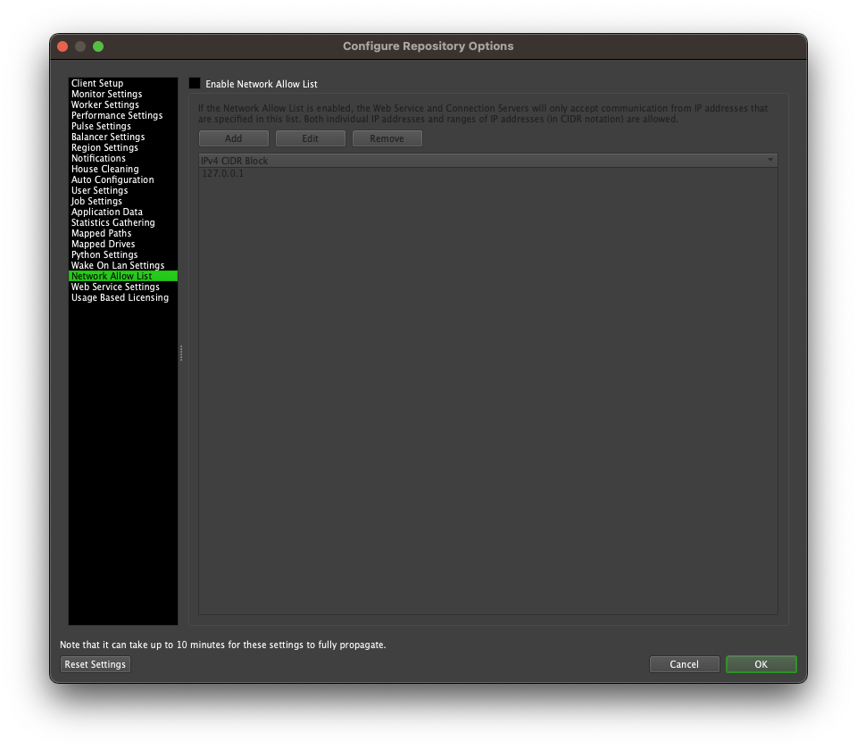
Note
Only IPv4 addresses and CIDR ranges are allowed. An IPv4 address may look like 52.232.87.63. An IPv4 CIDR range may look like 192.168.0.0/16.
Web Service Settings
The Web Service allows you to execute commands and scripts from a browser, and must be enabled to use Deadline’s Mobile applications. The Web Service can be run as a console application. Note that only one instance of the Web Service can run on a machine at a time. Also note that all changes to the Web Service settings require the Web Service to be restarted before they will be implemented.

If the Web Service requires authentication, users would use their Deadline user name along with the password stored in their User Settings. If empty passwords are allowed, they can leave their password setting blank, however please note that it is not recommended to allow empty passwords with the Web Service.
Require Authentication: If enabled, the Web Service will require a username and password. These are stored in the user settings.
Allow Empty Passwords: If enabled, the Web Service will accept empty passwords.
Usage-Based Licensing
Usage-based licensing (UBL) settings have two types, “Deadline Cloud” which refers to the new preferred method of configuring UBL through AWS Deadline Cloud license endpoints, and “Legacy” which refers to the deprecated Thinkbox UBL configuration.
AWS Deadline Cloud Usage-Based Licensing
Usage-Based Licensing is vended through the AWS Deadline Cloud service. AWS Deadline Cloud UBL offers a Pay-as-you-go model, billed monthly on your AWS bill. For UBL pricing see the AWS Deadline Cloud Usage-Based Licensing pricing guide.
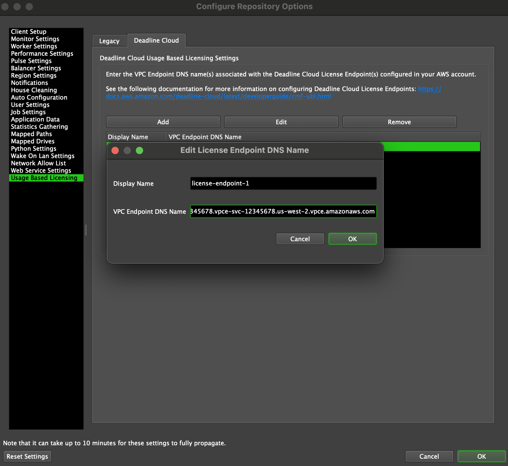
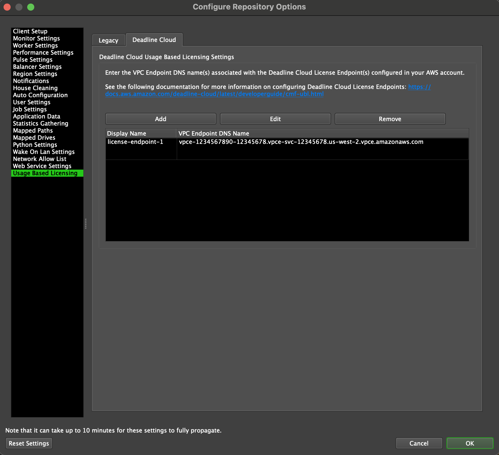
You can configure multiple Deadline Cloud license endpoints to direct license traffic to when using Deadline Cloud license limits.
Display Name: A unique user-friendly identifier for a VPC endpoint DNS name for the license endpoint. This will be used to associate with Deadline Cloud license limits in the limits panel
VPC Endpoint DNS Name: The VPC endpoint DNS name of the Deadline Cloud license endpoint. See the Usage-Based Licensing documentation on how to create a license endpoint and retrieve the VPC endpoint DNS name.
Legacy Usage-Based Licensing
Warning
The below documentation shows how to configure legacy Thinkbox usage-based licensing (UBL), which is no longer available as of September 30, 2025. The UBL feature in Deadline 10 is now available through AWS Deadline Cloud UBL. For detailed setup instructions, please see the Deadline Cloud UBL Documentation.
For more details, please refer to the marketplace website.
If you are using Usage-Based Licensing, you must specify the information that the Deadline Workers will use to connect to your Cloud License Server.

Usage-Based Licensing Settings
URL: This is the URL that is used to connect to your Cloud License Server. It can be in one of two forms, depending on if you’re using a Cloud License Server or a Cloud License Server Proxy. Here are a couple of examples (where XXXXXXXXXXXXis the ID of your Cloud License Server):
Use Cloud License Server: Enable this section if you are using a Cloud License Server, as it requires an Activation Code to connect to it.
See the Usage-Based Licensing documentation for more information on UBL, including how to access your Customer Portal, and how to find your Cloud License Server URL and Activation Code.
Note that if you happen to be using a Local License Server, the Activation Code is not required, so you can leave the Cloud License Server section disabled. In addition, the URL will look like http://[MACHINE]:7070/request, where [MACHINE] is the host name or IP address of the machine that the Local License Server is running on. Note that 7070 is the default port that the Local License Server listens on. Please contact Thinkbox Support for more information about the Local License Server.
Use Dynamic Licensing Mode (DEPRECATED): Starting with Deadline 10.1.23, Deadline and its components do not require a license. For older versions, if this mode is enabled, the Deadline Workers will always try to use floating licenses if they are available. They will only attempt to use Usage-Based Licensing if they can not obtain a floating license, and if the number of Workers already using floating licenses is equal or greater than the Standard Threshold value. The maximum number of Workers that can use Usage-Based Licensing can be capped using the UBL Limit value, or Unlimited UBL can be enabled for no cap.
Enable Web Forwarding: If enabled, the Workers will connect to the License Forwarder, instead of going directly to the internet, to perform requests for UBL credits.
Auto-detect 3rd Party Usage Based License Consumption: When enabled, if a Limit for 3rd Party UBL is assigned to a job, credits for that 3rd Party application will only be consumed if the application requests a license. See here for more information about the benefits and limitations of this setting.
License Forwarder Settings
Stalled License Forwarder Threshold (in minutes): Deadline determines if a License Forwarder has stalled by checking the last time that the License Forwarder has provided a status update. If a License Forwarder has not updated its state in the specified amount of time, it will be marked as Stalled.
Global Remote Command Port Override: If enabled, this port will be used by all License Forwarders for remote commands. Otherwise, the port used will be randomly assigned on each License Forwarder’s startup.


{kind=link}
{kind=link}
{kind=link}
{kind=link}
{kind=link}
{kind=link}
{kind=link}
{kind=link}
{kind=link}
{kind=link}
{kind=link}
{kind=link}
{kind=link}
{kind=link}
{kind=link}
{kind=link}
{kind=link}
{kind=link}
{kind=link}
{kind=link}
{kind=link}
{kind=link}
{kind=link}
{kind=link}
{kind=link}
{kind=link}
{kind=link}
{kind=link}
{kind=link}
{kind=link}
{kind=link}
{kind=link}
{kind=link}
{kind=link}
{kind=link}
{kind=link}
{kind=link}